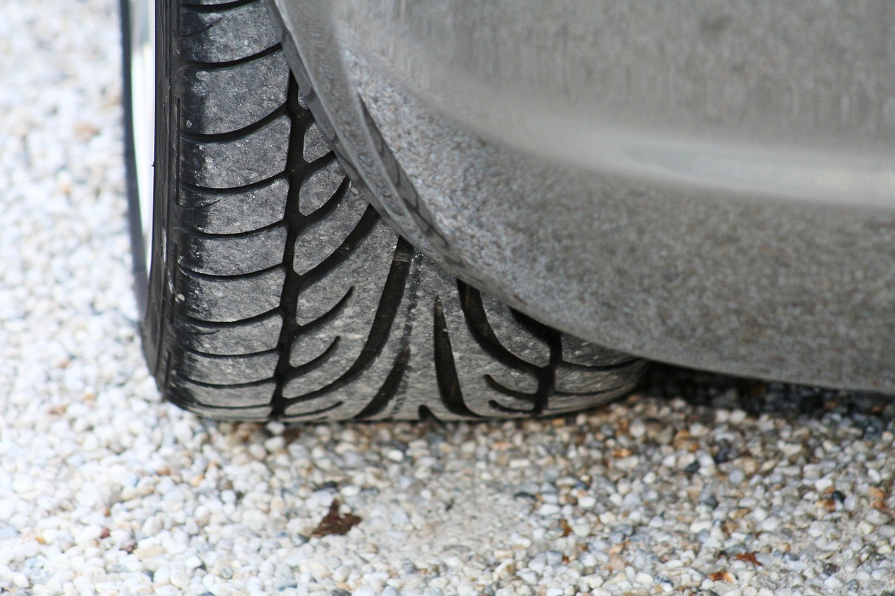
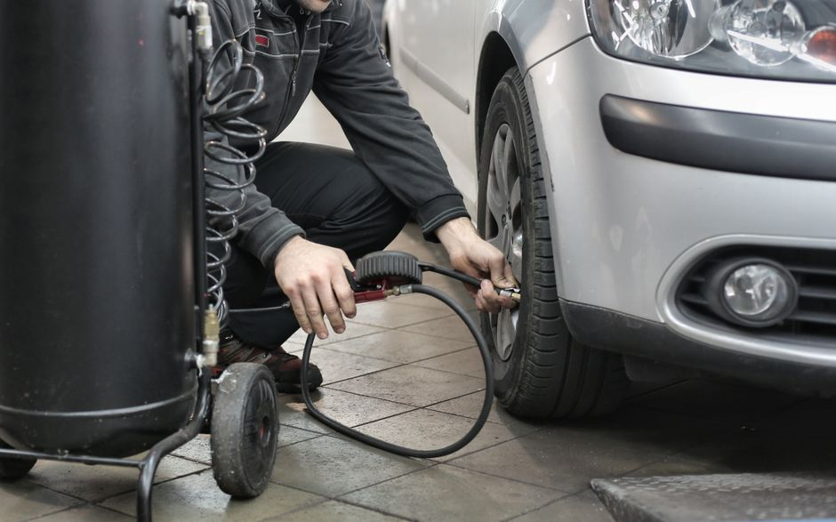

Comment inspecter et maintenir les pneus pour une sécurité maximale

Photo: schauhi / Pixabay
Inspection et maintenance des pneus : assurez-vous de votre sécurité routière
Introduction
Comme la plupart des aspects de l'entretien automobile, l'inspection et la maintenance des pneus sont essentielles pour assurer une conduite sûre. Les pneus jouent un rôle critique dans l'adhérence, la stabilité et la sécurité lors du freinage. Ils supportent également le poids de la voiture et absorbent les chocs lors de la conduite. Dans ce guide, nous explorerons comment inspecter et maintenir vos pneus pour garantir une sécurité maximale sur la route.
Vérification de la pression des pneus

Photo: Andrea Piacquadio / Pexels
Une pression incorrecte peut entraîner des inégalités de pression sur le pneu, augmenter la consommation de carburant et réduire la durée de vie du pneu. Il est recommandé de vérifier la pression des pneus au moins une fois par mois et avant un long trajet.
Conseil pratique : Utilisez un manomètre pour vérifier la pression à froid, c'est-à-dire avant de démarrer ou quelques heures après avoir arrêté le véhicule. Comparez les valeurs avec les recommandations du constructeur, qui sont généralement indiquées sur une étiquette dans l'encadrement de la portière côté conducteur (ou dans le manuel du propriétaire).
Inspection visuelle des pneus
Photo: Laker / Pexels
Pendant l'inspection de la pression, prenez le temps de vérifier l'état visuel des pneus. Les signes d'usure, de dégradation ou de rayures importantes doivent être signalés à un professionnel. Si vous remarquez une bosse ou une hernie sur le flanc, une coupure profonde ou un objet planté dans le pneu, faites-le inspecter sans attendre par un professionnel.
Scénario concret : Imaginez que vous remarquiez une bosse sur le flanc du pneu avant droit. Elle indique que la structure du pneu est endommagée, ce qui peut provoquer un éclatement. Il est conseillé de vous rendre chez un professionnel pour une inspection et, si nécessaire, de remplacer le pneu.
Équilibrage et rotation des pneus
L'équilibrage des pneus est un service qui vise à éliminer les déséquilibres dans le poids du pneu et de la roue, ce qui permet un fonctionnement plus fluide et réduit les vibrations du volant. La rotation des pneus consiste à échanger les positions des pneus pour uniformiser l'usure.
Conseil pratique : La rotation des pneus est généralement recommandée tous les 8 000 à 10 000 km (consultez le manuel de votre véhicule). L'équilibrage se fait au montage de pneus neufs, après une réparation et dès que vous ressentez des vibrations dans le volant.
Réglage de l'alignement des pneus
Un réglage d'alignement des pneus est souvent nécessaire lorsque vous remarquez des vibrations lors de la conduite à vitesse élevée, un décalage de direction lors de l'accélération ou des signes d'usure asymétrique. Ces signes peuvent indiquer que l'alignement des pneus est hors norme.
Conseil pratique : Faites vérifier l'alignement si vous constatez les symptômes ci-dessus, après un choc important (bordure, nid-de-poule) ou lors du changement de pneus ou d'éléments de suspension.
Vérifier la profondeur du profil
Il est crucial de vérifier la durabilité des pneus pour éviter des éclats ou des défaillances potentiellement dangereuses. Les pneus doivent être remplacés lorsque la profondeur du profil est inférieure à 1,6 mm, ce qui correspond au niveau de sécurité minimum.
Conseil pratique : Utilisez une jauge de profondeur pour mesurer le profil. Sous 1,6 mm (le minimum légal), remplacez vos pneus ; pour une bonne adhérence sur chaussée mouillée ou enneigée, il est préférable de les remplacer dès que le profil approche 3 mm.
Conclusion
La sécurité routière commence par des pneus bien entretenus. En suivant ces conseils, vous pouvez assurer la sécurité de vous-même et de vos passagers sur la route. N'oubliez pas que chaque pneu est unique et que certaines recommandations peuvent varier en fonction du modèle de votre véhicule. Pour des conseils précis, n'hésitez pas à consulter le manuel d'utilisation de votre voiture ou à vous rendre chez un professionnel de l'entretien automobile.
En suivant ces étapes simples et régulières, vous pouvez garantir que vos pneus seront toujours prêts pour la conduite, quel que soit le trajet.
Produits recommandés
En tant que Partenaire Amazon, je réalise un bénéfice sur les achats remplissant les conditions requises.